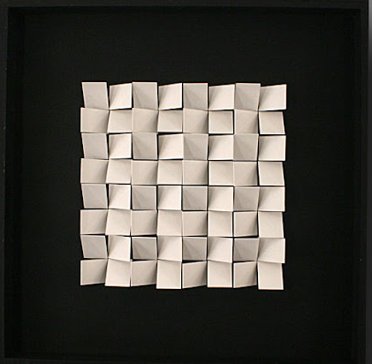
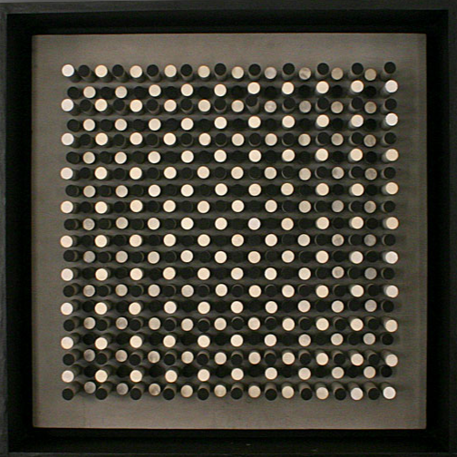
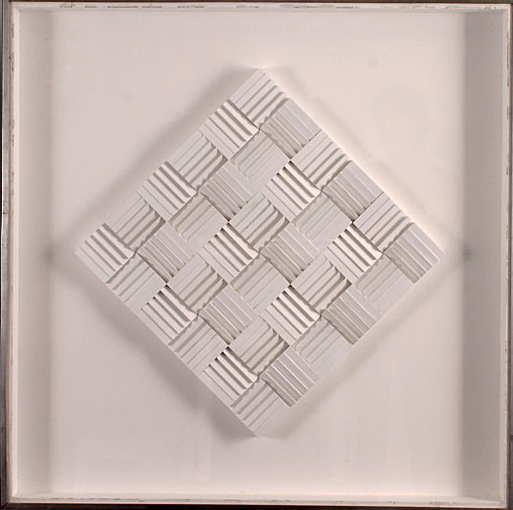

x
x
De las series "Relief", "Continuel Mobile" y "Ondes".

Relief blanc sur noir, 1960

Progression des niveaux, 1960
Angles progressifs, 1960

Quatre positions, 1971

Continuel Mobile, 1960
Continuel Mobile Transparent, 1962
Continuel Lumiere, 1960
Continuel Mobile Reflect, 1960
Ondes, 1970
12 eteudes, 1972
13 eteudes, 1972
Composition Cinetique, 1974